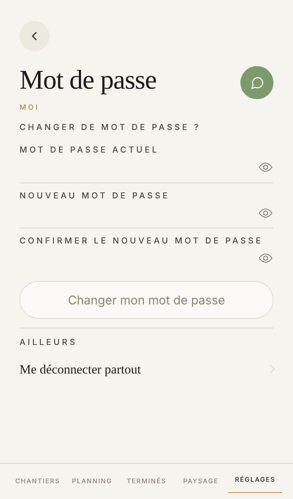

Proposé
Aujourd'hui

Ce qui change
- Il tient sans défiler dans les trois cas. Aujourd'hui il peut glisser dès qu'un appareil porte Face ID, et il glisse quand on touche Me déconnecter partout, dont la confirmation s'ouvre dans l'écran.
- Les trois cases tiennent chacune sur une ligne : « Actuel », « Nouveau », « Confirmer », en toutes lettres et non plus en capitales espacées. Le titre au-dessus dit déjà « mot de passe ».
- La phrase qui dit que les deux sont identiques passe au vert, la couleur de ce qui marche. Celles qui bloquent restent rouges.
- Une fois changé, la confirmation se lit à la place du bouton, en vert, au lieu de s'ouvrir en haut et de pousser l'écran.
- Face ID et Me déconnecter partout vont dans une seule plage, chacun avec sa pastille : verte quand Face ID est posé, rouge pour la sortie. « Ailleurs » part.
- Me déconnecter partout ouvre la feuille de Se déconnecter, que vous avez retenue : le nom de l'entreprise, la phrase, le bouton rouge, et « Annuler » en simple mot.
- Plus de « MOI » doré sous le titre.
Ce qui ne bouge pas
- « Changer de mot de passe ? » avec son point d'interrogation, les deux saisies, et l'œil sur les trois cases.
- Le bouton sous ses propres cases, au-dessus de Face ID (votre demande du 26 août), et éteint tant que la saisie ne tient pas.
- La règle ne parle qu'en mordant : « Il faut au moins 12 caractères. » n'apparaît qu'en tapant. Essayez dans la case Nouveau.
- Face ID après le mot de passe, une date sous chaque appareil, et la ligne Face ID qui ne paraît que sur un appareil qui sait le faire. Retirer un appareil peut redemander votre mot de passe, puis reprend tout seul.
- Deux appuis pour se déconnecter partout, et la phrase qui prévient que Face ID part avec.
À trancher
- Le 9 septembre, vous aviez gardé les libellés en capitales sur cet écran. Ce soir, la série les écrit en toutes lettres : on suit ce soir, ou on garde les capitales ici.